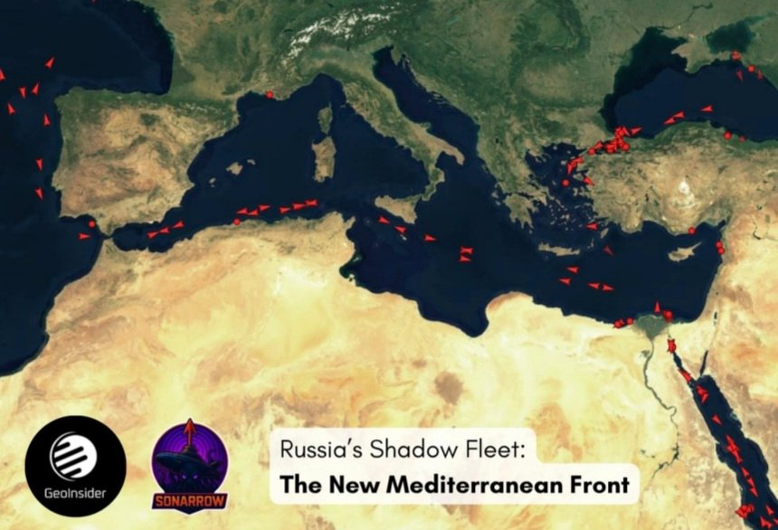
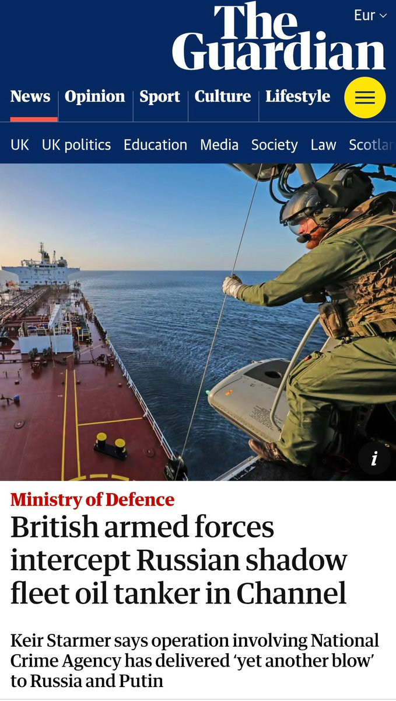
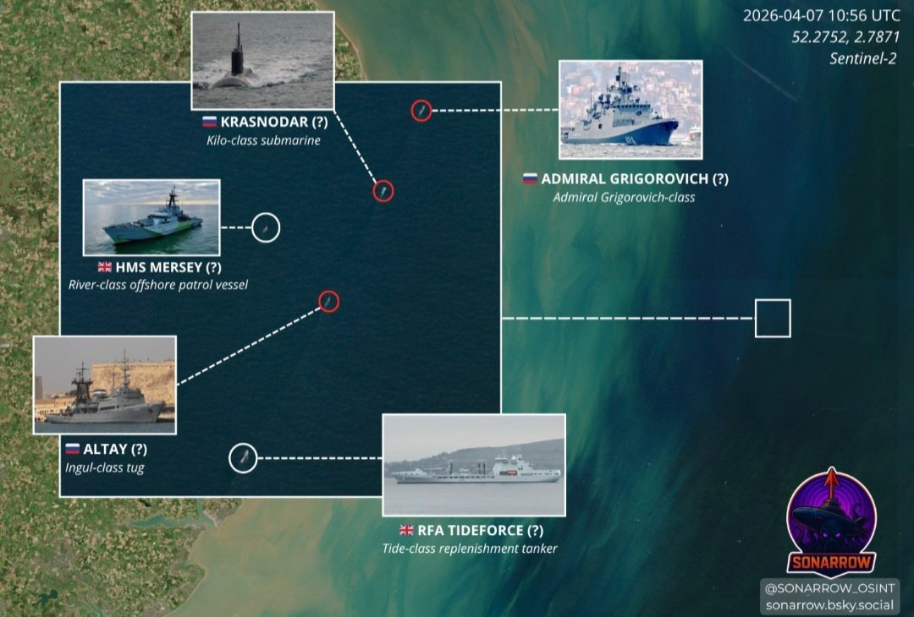
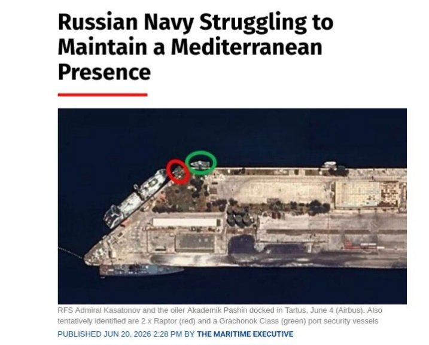
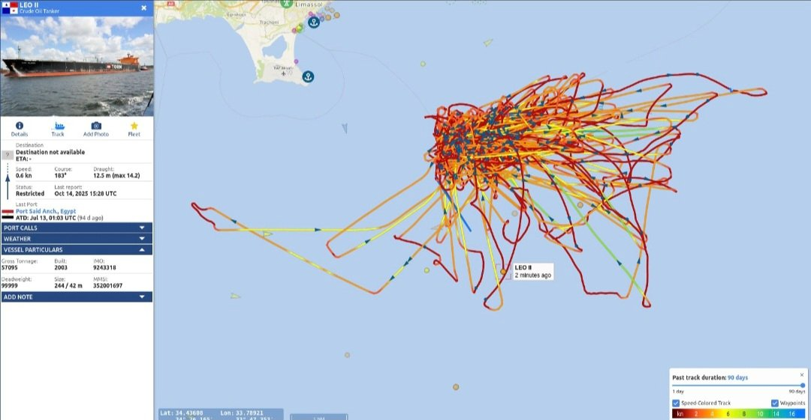
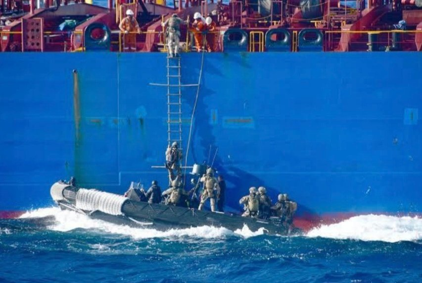
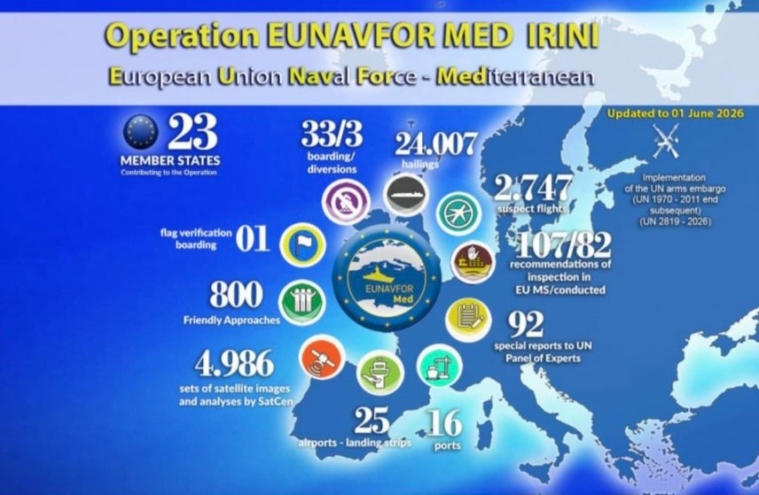

How does Russia's shadow fleet work once it leaves Russian ports? Why is the Mediterranean becoming increasingly important? And could Operation IRINI become one of Europe's most effective tools against sanctions evasion?

The Deliver was inspected under a false Cameroonian flag, with French authorities backed by Operation IRINI. It is a signal of where sanctions evasion is heading: the Mediterranean. Could IRINI become Europe's key weapon against it?
What Is Russia's Shadow Fleet?
Hundreds of aging tankers operating through opaque ownership, constantly changing flags, insurers and operators to keep Russian oil flowing despite Western sanctions and the G7 price cap.
Until now, attention has focused on two key areas:
- The Baltic Sea, where roughly half of Russia's seaborne crude exports originate.
- The English Channel, Europe's most closely monitored maritime chokepoint for shadow fleet traffic.
Both remain critical. But Russia is increasingly relying on its Navy to protect shadow fleet operations. In recent months, the frigate Admiral Grigorovich and corvette Soobrazitelny have repeatedly escorted sanctioned tankers through the Baltic.

Why the Mediterranean?
If Europe wants to increase pressure, it should also look where Russia is weakest. That is the Mediterranean.
Unlike the Baltic, Russia cannot project the same naval power there, while European maritime superiority is overwhelming.
The Mediterranean matters for another reason. It is where Russian crude is often "laundered" by obscuring its origin through complex maritime logistics and repeated ship-to-ship transfers before reaching global markets.


How Oil Laundering Works
A sanctioned tanker leaves a Russian port. Days later, off Greece, Malta or Cyprus, it meets a VLCC offshore. The vessels come alongside each other and transfer crude through a ship-to-ship operation.
That VLCC can later transfer the cargo again. The receiving tanker sails with documentation that no longer references the original Russian loading port, making the oil's origin significantly harder to trace.
The Mediterranean is ideal for this.
- It links Baltic and Black Sea routes.
- It provides direct access to Suez, North Africa, Türkiye and Asia.
- Heavy commercial traffic makes suspicious tanker movements far harder to identify.

Operation IRINI: From Arms Embargo to Shadow Fleet Tool?
This is where Operation IRINI comes in. Created in 2020 to enforce the UN arms embargo on Libya, IRINI already patrols much of the Mediterranean using naval vessels, aircraft, satellites and intelligence assets.
Since May 2026, IRINI has already carried out at least three flag verification boardings under Article 110 of UNCLOS against vessels linked to Russia's shadow fleet:
IRINI boardings — shadow fleet (May–Jun 2026)
- Nelsa
- Oneiroi
- Sandhya
IRINI also supported French authorities during the inspection of the Deliver on June 23. Only a handful of inspections so far, but enough to suggest the Mediterranean is becoming an increasingly important focus of European enforcement.

What Is Still Missing
Europe doesn't need entirely new institutions — most of the necessary tools already exist. What is still missing is stronger coordination between Operation IRINI, EU sanctions authorities and national navies to systematically target the shadow fleet ecosystem.

The Mediterranean Is Not Where Russia's Shadow Fleet Begins
The Mediterranean is rapidly emerging as one of the key fronts in the fight against Russia's shadow fleet. It is where sanctioned Russian oil is transferred, its origin obscured, and then reintroduced into global markets.
Recent IRINI operations suggest European authorities are beginning to recognize this shift.
The Mediterranean is not where Russia's shadow fleet begins. It is where sanctioned Russian oil becomes far harder to trace — and where Europe has its greatest opportunity to disrupt it.